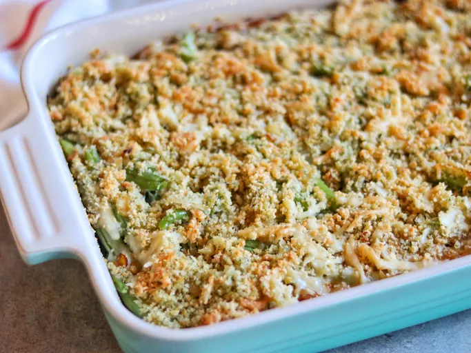

French Onion Green Bean Casserole Recipe

Description
A classic green bean casserole is elevated with some of my favorite flavors from French onion soup — caramelized onions and Gruyère cheese.
Ingredients
- For the onions:
- 2 tablespoons butter
- 2 large yellow onions, thinly sliced lengthwise
- salt and ground black pepper to taste
- 1 tablespoon sherry vinegar
- For the white sauce:
- 2 tablespoons butter
- 2 ½ tablespoons all-purpose flour
- 2 ½ cups milk
- 1 pinch ground nutmeg
- 1 pinch cayenne pepper to taste
- ¼ teaspoon ground thyme
- For the topping:
- 2 tablespoons melted butter
- ⅔ cup panko bread crumbs
- 2 pounds fresh green beans, trimmed
- 4 ounces shredded Gruyere cheese, divided
- ⅓ cup grated Parmesan cheese
Steps:
- Step 1:
- Preheat the oven to 375 degrees F (190 degrees C).
- Grease a 9x13-inch casserole dish.
- Step 2:
- Heat 2 tablespoons of butter in a large skillet over medium heat.
- Stir onions into the pan;
- Cook and stir until very soft and golden brown, about 15 minutes.
- Stir in sherry vinegar. Transfer to a small bowl, and reserve.
- Step 3:
- In the same skillet, melt 2 more tablespoons butter.
- Whisk in 2 tablespoons flour.
- Stirring constantly, cook over medium heat until flour smells like baked pie crust, about 3 minutes.
- Slowly whisk in milk, about 1/2 cup at a time, then whisk in nutmeg, cayenne pepper, and thyme.
- Bring to a simmer, and cook until thickened, whisking constantly, 3 more minutes.
- Transfer to a bowl and reserve.
- Step 4:
- Melt remaining 2 tablespoons butter in clean skillet.
- Stir in panko until all crumbs are coated;
- Reserve.
- Step 5:
- Bring a large saucepan of salted water to a boil over medium heat, and boil beans until bright green and crisp but not raw tasting, 3 to 4 minutes.
- Drain very well.
- Step 6:
- Spoon half of the caramelized onions into the prepared casserole dish.
- Top with green beans.
- Season with salt and black pepper.
- Spread reserved white sauce over the green beans.
- Sprinkle with half of the Gruyere cheese.
- Top with the rest of the onions, and use the back of a spoon to push onions down into sauce and cheese.
- Top with the buttered panko crumbs, the remaining Gruyere, and Parmesan cheese.
- Step 7:
- Bake in the preheated oven until hot throughout and lightly browned, about 30 minutes.
- Let sit 10 minutes before serving.
Home